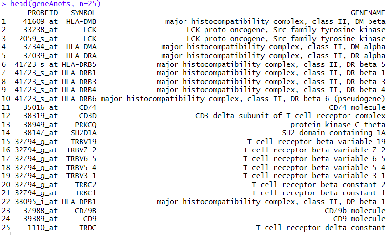

# Helper packages
library(dplyr) # for data wrangling
library(ggplot2) # for awesome plotting
library(doParallel) # for parallel backend to foreach
library(foreach) # for parallel processing with for loops
# Modeling packages
library(randomForest) # for fitting bagged decision treesRandom forests for gene expression data
Random forests for gene expression data
Random forest have been particularly successful in Bioinformatics where high dimensional data are common.
One common application has been the use of RF to derive cancer-related classifiers based on gene expression data.
Gene expression data are high dimensional tabular datasets where for each inividual the expression of a high number of genes has been measured
The example uses “RMA-preprocessed gene expression data” obtained by (Chiaretti et al. 2004). Briefly they consist of:
- 12625 genes (hgu95av2 Affymetrix GeneChip)
- 128 samples (arrays)
- phenotypic data on all 128 patients, including:
- 95 B-cell cancer
- 33 T-cell cancer
A standard bioinformatic preprocessing has been applied.
The code below is shown for consistency, but unless you are interested/familiar with Bioconductor and microarray data storage and preprocessing it can be skipped.
This code generates a simplified dataset that is saved into a binary file `data/smallALL.Rda’. This file can be directly loaded for the example.
if(!require(affy)) BiocManager::install("affy")
if(!require(genefilter)) BiocManager::install("genefilter")
if(!require(ALL)) BiocManager::install("ALL")
library(affy)
library(ALL)
data(ALL)Preprocessing is applied to obtain relevant subset of data Also, keep 30 arrays here JUST for computational convenience #
library(genefilter);
e.mat <- 2^(exprs(ALL)[,c(81:110)])
ffun <- filterfun(pOverA(0.20,100))
t.fil <- genefilter(e.mat,ffun)
smallData <- log2(e.mat[t.fil,])
group <- c(rep('B',15),rep('T',15))
dim(smallData)
colnames(smallData)
infoData <- cbind(pData(ALL)[81:110,1:5], group) # column "BT" defines groups
save (smallData, infoData, file="data/smallALL.Rda")load (file = "data/smallALL.Rda")We use the randomForest library to build an “out-of-the box” classifier.
if (!require(randomForest)) install.packages("randomForest", dep=TRUE)
library(randomForest)
set.seed(1234)
system.time(
rf <- randomForest(x=t(smallData),
y=as.factor(infoData$group),
ntree=10000)
) user system elapsed
8.73 0.00 13.17 Inspect the results
rf
Call:
randomForest(x = t(smallData), y = as.factor(infoData$group), ntree = 10000)
Type of random forest: classification
Number of trees: 10000
No. of variables tried at each split: 66
OOB estimate of error rate: 0%
Confusion matrix:
B T class.error
B 15 0 0
T 0 15 0Now look at variable importance:
imp.temp <- abs(rf$importance[,])
t <- order(imp.temp,decreasing=TRUE)
plot(c(1:nrow(smallData)),imp.temp[t],log='x',cex.main=1.5, xlab='gene rank',ylab='variable importance',cex.lab=1.5, pch=16,main='ALL subset results') 
Or, a better plot:
varImpPlot(rf, n.var=25, main='ALL Subset Results') We can focus on the 25 most important genes
gn.imp <- names(imp.temp)[t]
gn.25 <- gn.imp[1:25]
# vector of top 25 genes, in orderWe can use the Bioinformatics Bioconductor libraries to find out more about these these genes. Information on how to do it can be found at https://aspteaching.github.io/An-Introduction-to-Pathway-Analysis-with-R-and-Bioconductor/.
Again, the code is shown but it has been run aside this lab and the result saved as a binary file.
if(!require(hgu95av2.db)) BiocManager::install("hgu95av2.db")
if(!require(AnnotationDbi)) BiocManager::install("AnnotationDbi")
library(hgu95av2.db)
geneAnots <- AnnotationDbi::select(hgu95av2.db, gn.25,
c("SYMBOL", "GENENAME"))
head(geneAnots, n=25)knitr::include_graphics("images/geneNames.png")
To end the exploration we plot heatmap that shows how the two groups differ in gene expression.
sigGenes<- smallData[gn.25,]
t <- is.element(rownames(small.eset),gn.25)
sig.eset <- small.eset[t,]
# matrix of expression values, not necessarily in order
library(RColorBrewer)
hmcol <- colorRampPalette(brewer.pal(11,"PuOr"))(256)
colnames(sig.eset) <- group
# This will label the heatmap columns
csc <- rep(hmcol[50],30)
csc[group=='T'] <- hmcol[200]
# column side color will be purple for T and orange for B
heatmap(sigGenes,scale="row", col=hmcol,ColSideColors=csc) knitr::include_graphics("images/allHeatMap.png")
Random Forests with Python
The following link points to a good brief tutorial on how to train and evaluate Random Forests using Python
References
Chiaretti, Sabina, Xiaochun Li, Robert Gentleman, Antonella Vitale, Marco Vignetti, Franco Mandelli, Jerome Ritz, and Robin Foa. 2004. “Gene expression profile of adult T-cell acute lymphocytic leukemia identifies distinct subsets of patients with different response to therapy and survival.” Blood 103 (7): 2771–78. https://doi.org/10.1182/blood-2003-09-3243.